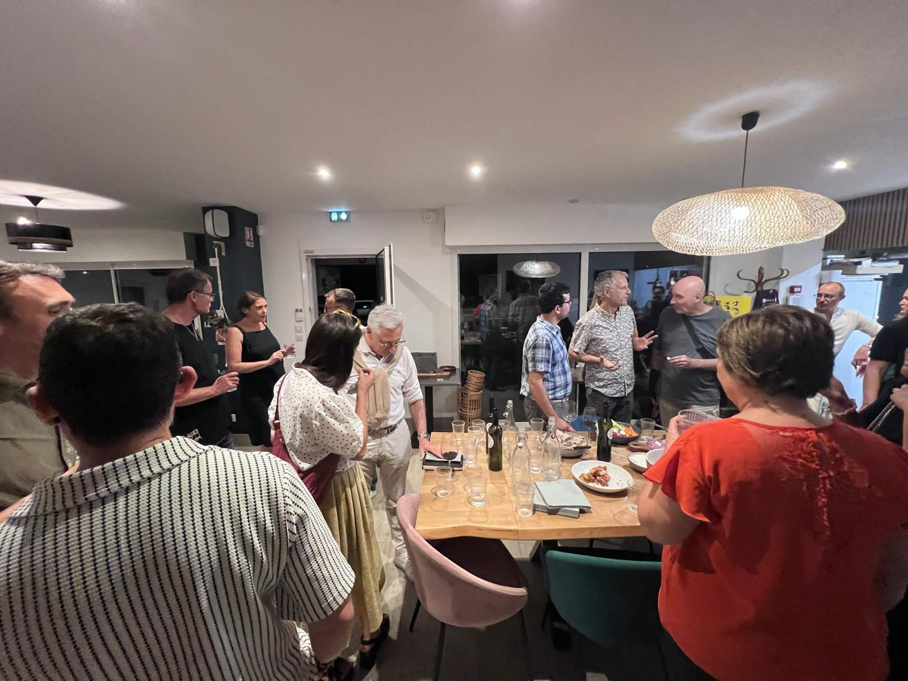
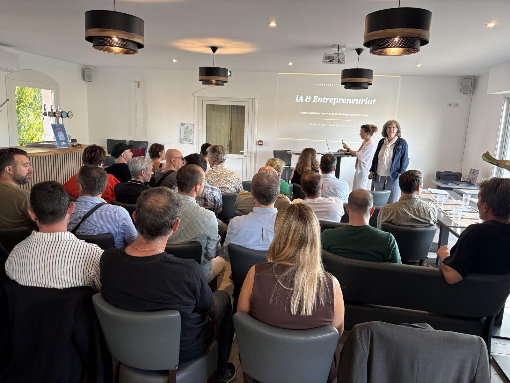

En vrai
Des rencontres physiques. Jamais de webinaire : l'échange se passe dans la salle, et après.
Le principe
Les RDV en terrain numérique réunissent les professionnels du numérique de Charente, en vrai, autour de retours d'expérience concrets. Pas de conférence magistrale, pas de webinaire : on vient, on écoute, on questionne, on trinque.
Des rencontres physiques. Jamais de webinaire : l'échange se passe dans la salle, et après.
Des retours d'expérience : ce qui a marché, ce qui a coincé, ce qu'on referait autrement.
15 à 20 minutes par présentation, pas plus. L'essentiel, sans slides interminables.
Questions-réponses après chaque intervention, puis un cocktail simple pour prolonger.
3 sujets par soirée, sans thème imposé : IA, cyber, design, open data, outils, métiers…
Un lieu différent à chaque fois, surtout à Angoulême, et ailleurs en Charente au gré des occasions.




Historique
Aucune soirée ne correspond à cette recherche.
Une organisation informelle
Les RDV sont portés par un noyau de bénévoles qui s'étoffe au fil des soirées : Laure Raymond, Frédéric Bourcier, Clément Germon, Denis Oblin et Sonia Bilon. Pas de structure juridique, un fonctionnement autofinancé… et de plus en plus automatisé : invitations, inscriptions, agenda et ce site sont alimentés depuis la même base, sans ressaisie.
Entreprises, écoles, institutions : vous prêtez une salle et/ou offrez le cocktail, et votre logo accompagne l'invitation et la soirée.
Nous écrireVous avez un retour d'expérience à partager en 15–20 minutes ? Réussite, échec instructif, outil, méthode : tout ce qui vient du terrain.
Proposer un sujetInscrivez-vous à une soirée : vous recevrez ensuite les invitations suivantes par e-mail.
S'inscrireIls ont accueilli ou soutenu une soirée